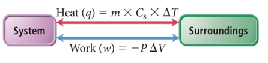
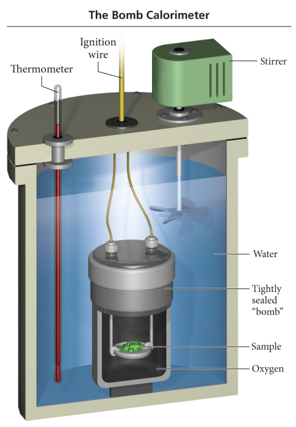
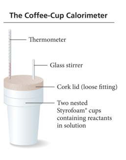

Week 14 - Day 1
Clicker 1
- A sample of NI3 is contained in a piston and cylinder. The
samples rapidly decomposes to form nitrogen gas and
iodine gas, and releases 3.30 kJ of heat and does 950 J of
work. What is ∆E?
- A) -953.3 J
- B) +953.3 J
- C) -4250 J
- D) -946.7 J
- E) +4250 J
Exchanging Energy between System and Surroundings
- Exchange of heat energy
- q = mass × specific heat × ΔTemperature
- Exchange of work
- w = −Pressure × ΔVolume
- 
Measuring ΔE: Calorimetry at Constant Volume
- Because ΔE = q + w, ΔE can be determined by measuring q and w.
- In practice, it is easiest to do a process in such a way that there is no change in volume, so w = 0.
- At constant volume, ΔEsystem = qsystem.
- In practice, temperature changes of individual chemicals involved in the reaction cannot be observed directly, so instead the temperature change in the surroundings is measured.
- Using an insulated container (e.g., controlled surroundings)
- qsystem = −qsurroundings
- The surrounding area is called a bomb calorimeter and is usually made of a sealed, insulated container filled with water.
- qsurroundings = qcalorimeter = –qsystem
Bomb Calorimeter
- 
- It is used to measure ΔE because it is a constant volume system.
- The heat capacity of the calorimeter is the amount of heat absorbed by the calorimeter for each degree rise in temperature and is called the calorimeter constant.
- Ccal, kJ/°C
Practice Problem: Measuring ΔErxn in a Bomb Calorimeter
- When 1.010 g of sucrose (C12H22O11) undergoes combustion in a bomb calorimeter, the temperature rises from 24.92 oC to 28.33 oC. Find ΔErxn for the combustion of sucrose (in kJ/mol). The heat capacity of the calorimeter is 4.90 kJ/oC.
Clicker 2
- A 35.6 g sample of ethanol (C2H5OH) is burned in a bomb calorimeter, according to the following reaction. If the temperature rose from 35.0 to 76.0°C and the heat capacity of the calorimeter is 23.3 kJ/°C, what is the value of ΔErxn? The molar mass of ethanol is 46.07 g/mol.
- C2H5OH(l) + 3 O2(g) → 2 CO2(g) + 3 H2O(g) ΔErxn = ?
- A) -1.24 × 103 kJ/mol
- B) +1.24 × 103 kJ/mol
- C) -8.09 × 103 kJ/mol
- D) -9.55 × 103 kJ/mol
- E) +9.55 × 103 kJ/mol
Enthalpy: Heat Evolved at Constant Pressure
- “Bomb” Calorimetry is nice but…. we would like to work at atmospheric pressure
- For a system at e.g. atmospheric pressure the total energy is E plus the energy required to push the gas aside to make space for the system: PV
- The enthalpy, H, of a system is the sum of the internal energy of the system and the product of pressure and volume.
- H is a state function.
- H = E + PV
- H is a state function.
- The enthalpy change, ΔH, of a reaction is the heat evolved in a reaction at constant pressure.
- ΔHreaction = qreaction at constant pressure
- Usually ΔH and ΔE are similar in value; the difference is largest for reactions that produce or use large quantities of gas.
Endothermic and Exothermic Reactions
- When ΔH is negative, heat is being released by the system into the surroundings.
- The surroundings will “feel” hot.
- Temperature of the surroundings increased from the energy released by the system.
- This is called an exothermic reaction.
- When ΔH is positive, heat is being absorbed by the system from the surroundings.
- The surroundings will “feel” cold.
- Temperature of the surroundings decreased because energy left the surroundings to flow into the system.
- This is called an endothermic reaction.
Particulate View of Exothermic Reactions
- For an exothermic reaction, the surrounding’s temperature rises due to a release of thermal energy by the reaction.
- This extra thermal energy comes from the conversion of some of the chemical potential energy in the reactants into kinetic energy in the form of heat.
- During the course of a reaction, existing bonds are broken and new bonds are made.
- The products of the reaction have less chemical potential energy than the reactants.
- The difference in energy is released as heat.
Particulate View of Endothermic Reactions
- In an endothermic reaction, the surrounding’s temperature drops due to absorption of some of its thermal energy by the reaction.
- During the course of a reaction, existing bonds are broken and new bonds are made.
- The products of the reaction have more chemical potential energy than the reactants.
- To acquire this extra energy, some of the thermal energy of the surroundings is converted into chemical potential energy stored in the products.
Enthalpy of Chemical Reaction
- The enthalpy change in a chemical reaction is an extensive property.
- The more reactants you use, the larger the enthalpy change.
- By convention, we calculate the enthalpy change for the number of moles of reactants in the reaction as written. C3H8(g) + 5 O2(g) → 3 CO2(g) + 4 H2O(g) ΔH = −2044 kJ 1 mol C3H8(g) = –2044 kJ or 5 mol O2(g) = –2044 kJ
Practice Problem: Enthalpy Stoichiometry
- Calculate the heat (in kJ) associated with the complete combustion of all of the propane in a 13.2 kg propane tank: C3H8(g) + 5O2(g) è 3CO2(g) + 4H2O(g) ΔHrxn= -2044 kJ
Measuring ΔH: Calorimetry at Constant Pressure
- Reactions done in aqueous solution are at constant pressure.
- The calorimeter is often nested foam cups containing the solution.
- qreaction = –qsolution = –(masssolution × Cs, solution × ΔT)
- ΔHreaction = qconstant pressure = qreaction
- To get ΔHreaction per mol, divide by the number of moles.
- 
Practice Problem: Calorimetry Magnesium metal reacts with hydrochloric acid:
- Mg(s) + 2HCl(aq) –> MgCl2 + H2(g) you combine 0.158 g of Mg with enough HCl to make 100.0 mL of solution in a coffee-cup calorimeter. T of the solution rises from 25.6 oC to 32.8 oC. Find ΔHrxn, assume density of solution is 1.00g/ml
Vocab
| Term | Definition |
|---|---|
| bomb calorimeter | used to measure ΔE because it is a constant volume system |
| calorimeter constant | the amount of heat absorbed by the calorimeter for each degree rise in temperature (capacity) |
| enthalpy (H) | the sum of the internal energy of the system and the product of pressure and volume |